Мавзу: Электрон тахеометр қийматларини дастурий таъминотда қайта ишлаш
Reja.
1. ZAMONAVOY DASTURLAR VA GEOAXBOROT TIZIMI
2. ArcGIS DASTURI VA UNING ILOVALARI
3. ArcCatalog ILOVASIDA MAVZULIY QATLAMLAR YARATISH
4. ArcMap ILOVASIDA ELEKTRON TAXEOMETRDAN OLINGAN QIYMATLARNI YUKLAB OLISH
5. ArcScene ILOVASIDA VEKTOR MA`LUMOTLARNI UCH O`LCHAMGA KO`TARISH
Hozirgi davrda maʼlumotlarni qayta ishlash bilan bog‘liq masalalar har bir soha faoliyatida
keng tarqalgan. Har qanday korxona yoki tashkilotni avtomatlashtirilgan maʼlumotlar
tizimisiz tasavvur qilish qiyin. Barcha avtomatlashtirilgan maʼlumotlar tizimlari
maʼlumotlar bazasini boshqarish tizimiga (MBBT) asoslanadi. Geomaʼlumotlar bazasi MBBT
negizida shakllantiriladi. Fan geomaʼlumotlar bazasini yaratish va boshqarishning nazariy
asoslarini va amaliy uslublarini o‘rganadi. Maʼlumotlar bazasi va geomaʼlumotlar bazasining
asosiy tushunchalari hamda ular orasidagi bog‘liqlik, sinflarga ajratish, maʼlumotlar
strukturasini shakllantirish va shunga mos MBBT turlarini ko‘rib chiqadi. Bugungi kunda har
qanday GAT (geografik axborot tizimi) loyihalarini geomaʼlumotlar bazasisiz tasavvur etish
qiyin, shunday ekan, bu sohada taʼlim oladigan talabalar ushbu fandan zaruriy bilimlarni
berish ularning yuqori malakali mutaxassis bo‘lib yetishishlarida muhim o‘rin egallaydi.
Bugungi kunda geodeziya iqtisodiyot tarmoqlarining barcha sohalarida keng
qo‘llanilmoqda. Shu bois GAT va geodeziyani birgalikda qo`llash uchun katta hajmdagi yozma
va grafikaviy, hudud bilan bog‘langan geografik ma’lumotlarni to‘plash kerak bo‘ladi.
Geoma’lumotlar bazalari esa maxsus GAT dasturlari yordamida yaratiladi. Ayni paytda
yurtimizning bir qancha jabhalarida ESRI kompaniyasining ArcGIS dasturi tanlanganligini
inobatga olgan holda ushbu metodik qo‘llanmada asosiy e’tibor ArcGIS dasturi negizida
geodezik o`lchashkarni matematik qayta ishlash, geoma’lumotlar bazasini yaratish va
boshqarish yo‘llarini o‘rgatishga qaratilgan. Shuni aytish joizki, ushbu ArcGIS dasturi
yordamida bugungi kunda dunyoning ko‘plab rivojlangan mamlakatlarida bo‘lgani kabi bizning
yurtimizda ham GAT loyihalari yaratilmoqda va ularning samarali faoliyat ko‘rsatishlari
ta’minlanmoqda. Geoaxborot tizimlari loyihalarini yaratish va ulardan samarali foydalanish
uchun geoma’lumotlar bazasi haqidagi bilimlarga ega bo‘lish kerak.
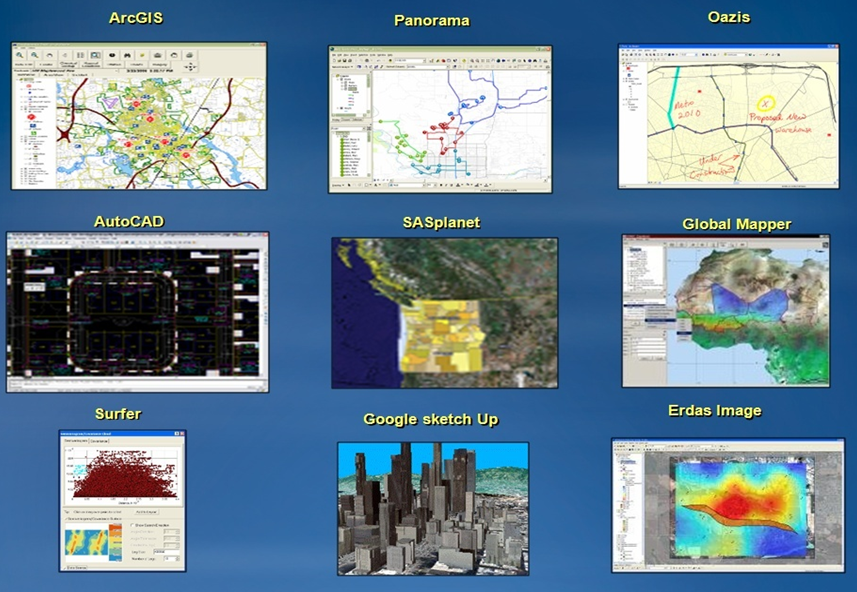
GAT oilasiga mansub dasturiy ta’minotlar
ArcCatalog, ArcGIS dasturining ilovasi sanalib, ishchi sohalarda va geoma’lumotlar
bazasida geografik axborot bilan ishlaydi va boshqaradi. Ishchi sohalar – bu diskdagi
fayllarga ega papkalar bo‘lib, sizning ma’lumotlaringiz – karta hujjatlari, tasvirlar,
ma’lumotlar fayllari, geoishlov berish modellari, geoma’lumotlar bazasi va boshqalarni
tashkil etish uchun foydalaniladi. Ishchi sohalar GAT axborotini mantiqiy to‘plamini tashkil
qilish va birgalikda foydalanishning oddiy usuli hisoblanadi.
Geoma’lumotlar bazasi- bu turli jiltdagi geografik malumotlar to‘plamlarini yig‘ish
bo‘lib, ular ArcGISda foydaniladi. Geoma’lumotlar bazasi tomonidan axborotni saqlashni bir
necha usullari mavjud:
Geoma’lumotlarning fayl bazasi – diskdagi fayllarga ega papka;
Geom’alumotlarning personal bazasi – Microsft Access (.mdb) ma’lumotlari bazasi fayli.
CUBD (Oracle, SQL Server, Informix, DV2 yoki postgrre SQL) Arc Catalog katologining
shajarasining tuzilish ko‘rinishda bu ma’lumotlarni ifodalaydi, bu ma’lumotlar bilan
ishlashni osonlashtiradi. U ArcGIS ma’lumotlari to‘plami va hujjatlar bilan ishlash uchun
mo‘ljallangan Windows kuzatuvchisining o‘z turidagi analogi hisoblanadi.
Mazkur bo‘limda Arc Catalogdan foydalanishning qisqacha abzori kiritilgan, shuningdek
Arc Catalog yordamida hal qilish mumkin bo‘lgan bazi masalalar keltirilgan.
Arc Catalog sizga hamma ma’lumotlar fayllari, ma’lumotlar bazazi va ArcGIS hujjatlari
uchun integrallashtirilgan va bir xil qilingan ko‘rinishda taqdim qilinadi. Arc Catalog
geografik axborot elementlari bilan ishlash va navigatsiya uchun ikkita asosiy panellardan
foydaniladi.
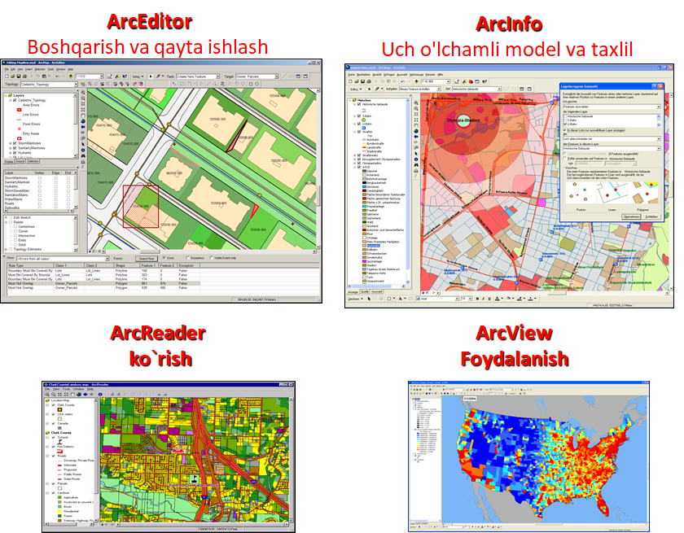
ArcGIS modullari
Kartografiya.
Diagramma va grafika.
Animatsiya.
Ma`lumotlar bilan ishlash.
Geotahlil.
Ma`lumotlarni boshqarish.
Format birliklarini qo`llash.
ESRI kompaniyasiga tegishli bo'lgan Arc Gis dasturida geografik ma'lumotlar bazasini
yaratish uchun mazkur dasturning Arc Catalog ilovasidan foydalaniladi. Arc Catalog
ta'minotining ishchi oynasi ochilgach Catalog daraxti yordamida kerakli bo'lgan xotira diski
tanlanib olinadi.
ESRI kompaniyasiga tegishli bo'lgan Arc Gis dasturida geografik ma'lumotlar bazasini
yaratish uchun mazkur dasturning Arc Catalog ilovasidan foydalaniladi.
Arc Catalog ta'minotining ishchi oynasi ochilgach Catalog daraxti yordamida kerakli
bo'lgan xotira diski tanlanib olinadi.
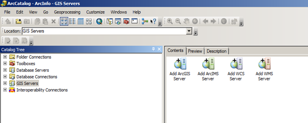
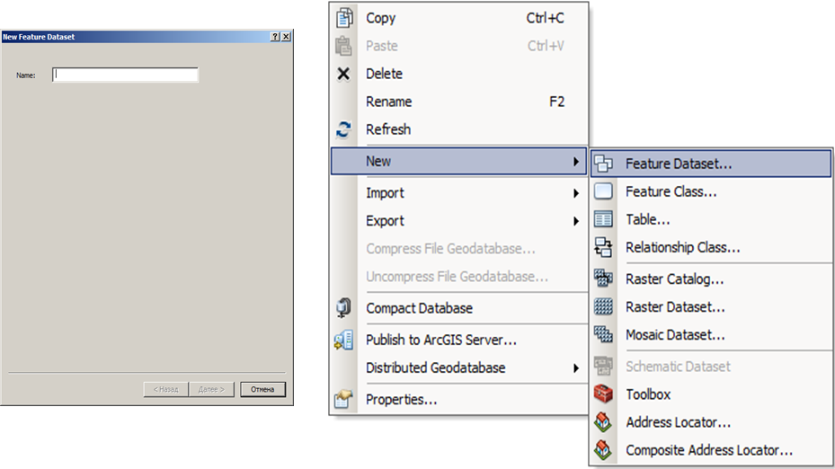
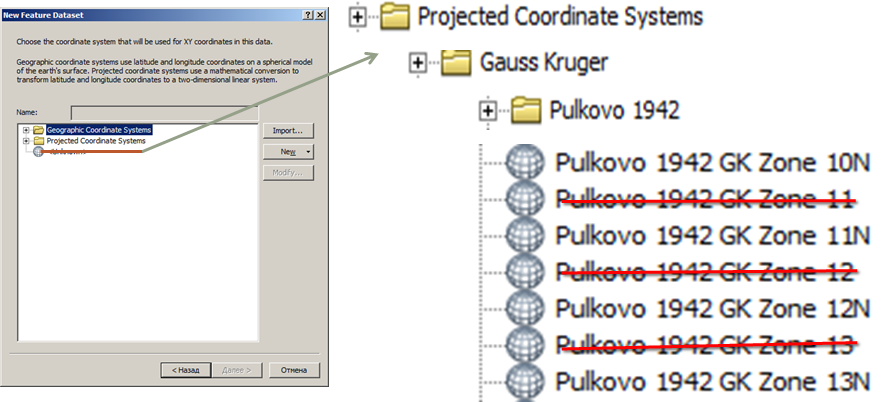
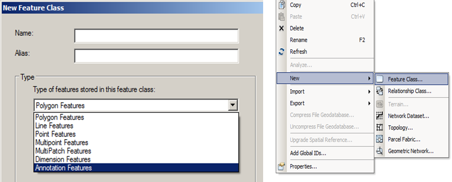
Koordinatalar tizimi ketma ketligi qo'yidagi tartibda amalga oshiriladi. Tanlangan xududga
tegishli zona belgilanadi va dalee tugmachasi ketma-ket ikki marta bosilgach finsh tugmasi
orqani Feature Dataset darchasiga yakun yasaladi.
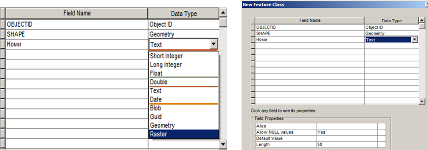
Xosil bo'lgan Feature Dataset ichiga kiriladi va yana bir bor sichqonchaning o'ng
tugmasi bosilib Feature Class qatori tanlanadi. Xosil bo'lgan New Feature Class ilovasi Name
bo'shlig'iga nomlanadigan ob'ekt nomi kiritilsa Type bandidagi qatorlardan katlam turiga
qarab katlam xili tanlanadi.
Masalan Maydonli qatlamga Polygon Features, chiziqli qatlamga Line Features, nuqtali
qatlamga Point Features va yozuvli qatlamga Annotation Features katorlari tanlanadi.
Dale tugmachasi bosilgach yaratilmoqchi bo'lgan qatlam xaqida ma'lumot beruvchi ma'lumotlar
jadvali ochiladi. Field Name ustuniga qatlam xaqida ma'lumot beruvchi so'zlar kiritilsa,
Data type ustuniga suzlarning qay turda ekanligi ko'rsatiladi. Masalan: agar kiritilgan
savol shaklidagi so'zlarning javoblari so'z shaklida bo'lsa Data type ustunidagi tur Text,
raqamlarga oid savol bo'lsa Double, sanaga oid savol bo'lsa Date, surat xaqida so'ralgan
bo'lsa Raster bandlari tanlanadi. Darchaning pastki qismida joylashgan Field Properties
buyrug'idagi Length qatorida ko'rsatilgan (50) raqam (i) Field Name ustunida keltirilgan
savol so'zlarining javoblari uchun qo'yiladigan xonalar soni (masalan Nomi – 4 xona, xonalar
soni cheklanmagan) kiritiladi va Finish tugmasi bosiladi. Shu tariqa xar – bir qatlamlarni
yaratish jarayoni kuzatiladi.
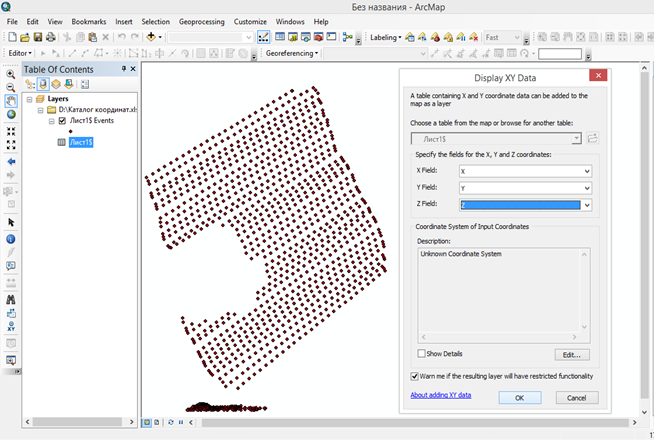
ArcMap ilovasi yuklangach, dobavit danniy tugmachasi yordamida elektron taxeometrdan yuklab
olingan koordinatalar kotalogi yuklab olinadi. Natijada mazkur fayl tablitsa soderjrniya
qatoriga tushadi. Koordinatalar fayliga sichqonchaning o`ng tugmasini bosib dobavit x,y
danniy qatoriga kiriladi. Ko`rsatilishi lozim bo`lgan qatorlarga belgilangan ma`lumotlar
keltiriladi va ok tugmachasini bosish orqaliy jadval ko`rinishiga ega bo`lgan ma`lumotlarni
qiymati (koordinatalari)ga asoslanib geografik ko`rinishi namayon bo`ladi.
Vizuallashtirilgan koordina qiymatlarini, mavzuli vektor turdagi qatlamlarga
aylantiriladi. Natijada vektor turga aylantirilgan koordinata qiymatlari tablitsa
soderjeniya qatoridan o`chirib tashlanadi.
Mavzuli qatlamga shartli belgilar berish, natpis qismidan atribut yozuvlarini namoyon
qilish ishlari amalga ishiriladi.
Nuqta ko`rinishidagi mavzuli qatlamlardan foydalanib interpolyatsiya usuli orqali
xududning relefi amalga oshiriladi. Buning uchun. ArcToolbox moduli aktivlashtiriladi.
Spatial Analyst Tools qatoriga kirilib Interpolation bandi ochiladi va natijada hosil
bo`lgan tahliliy bo`yruqlar qatoridan Spline ustiga sichqonchaning chap tugmasi ikki marta
bosiladi. Hosil bo`lgan darcha talablari bajariladi va ok tugmachasi bosilib hudud sirti
yaratiladi. Hosil bo`lgan sirtdan foydalanib, Spatial Analyst Tools qatoridagi Surface bandi
ochiladi va Contour tahliliy bo`yrug`I tanlanadi. Natijada ekranda darcha hosil bo`ladi.
Darchaga mazkur yaratilgan sirt ko`rsatilib relef kesim balandligi masshtabdan kelib chiqib
kiritiladi va ok tugmachasi bosiladi.
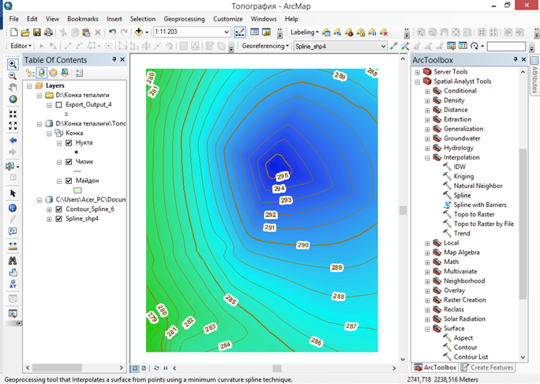
Hosil bo`lgan sirt va relef xotiraga olinadi. Xotiraga olingan mazkur ma`lumotlar
ma`lumotlar bazasiga aylanadi. Ma`lumotlarda geografik joylashuv, matematik asos va
atributiv qiymatlari mavjudligi sababli vektor ma`lumotlar turkumiga kiradi.
Vektor ko`rinishga ega bo`lgan ma`lumotlar eksport (konvertatsiya) qilish to`li orqali
boshqa dastur formati birligiga o`tkazish va natijalardan foydalanib ishni davom ettirish
mumkin.
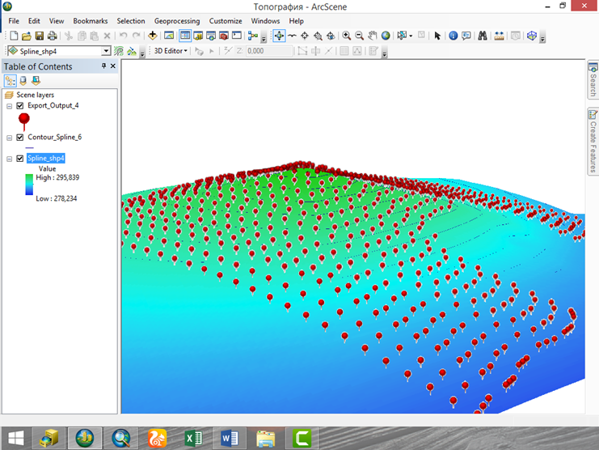
ArcScene ilovasi yuklangach dobavit danniy tugmasi yordamida mazkur vektor ma`lumotlar
yuklab olinadi.
Tablitsa soderjeniya qatoridagi sirt va relef qatlamlari ustiga sichqinchaning chap
tugmasini ikki marta bosish orqali qatlam svoystvasiga kiriladi. Base Hights bandidan
Floating on custom surface qatori belgilanadi va ok tugmachasi bosiladi. Natijada sirt uch
o`lcham ko`rinishida namoyon bo`ldai.
Yuqoridagi bajarilgan ishlardan kelib chiqib, dala qidiruv ishlarini bajarish
davomidagi, elektron taxeometr yordamida amalga oshirilgan topografik syomka ishlarining
qiymatlarini zamonaviy dasturlarda matematik qayta ishlash orqali topografik plan va
xaritalar yaratiladi.
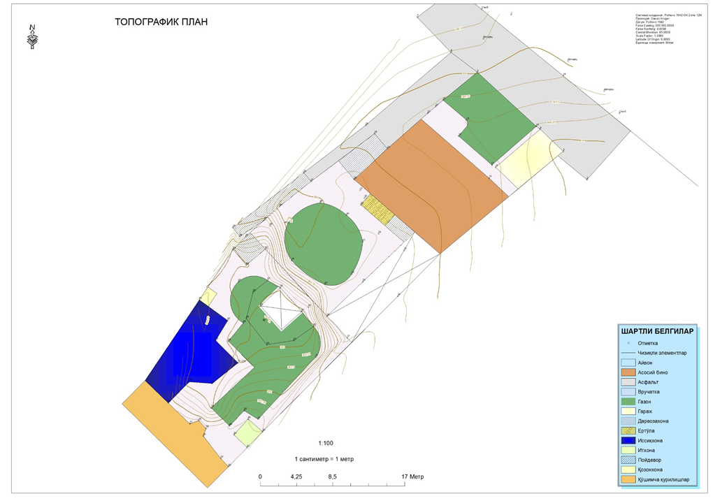